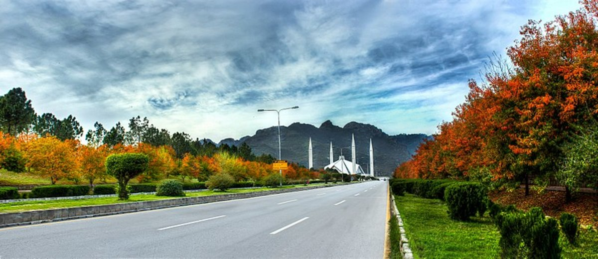

<div class="portfolio-single-load clearfix">
    <div class="custom-full-width-box">
        <div class="custom-container">
            <div class="custom-row align-items-center">
                <div class="custom-image-column">
                    
                </div>
                <div class="custom-text-column">
                    <h2 class="custom-heading">Islamabad</h2>
                    <p class="custom-paragraph">
                        Islamabad, the capital city of Pakistan, is a modern metropolis known for its lush greenery, well-planned infrastructure, and diverse culture. With a population of over 1.1 million people, Islamabad offers a blend of natural beauty and urban development. Visitors can explore iconic landmarks such as Faisal Mosque, the largest mosque in Pakistan, and Pakistan Monument, symbolizing national unity. The city also boasts expansive parks, including Fatima Jinnah Park and Shakarparian, providing ample opportunities for recreation and relaxation amidst scenic surroundings. With its vibrant atmosphere and cosmopolitan charm, Islamabad welcomes tourists from around the world to experience its unique blend of tradition and modernity.
                    </p>
                </div>
            </div>
        </div>
    </div><!-- .custom-full-width-box end -->

</div><!-- end single-project -->
